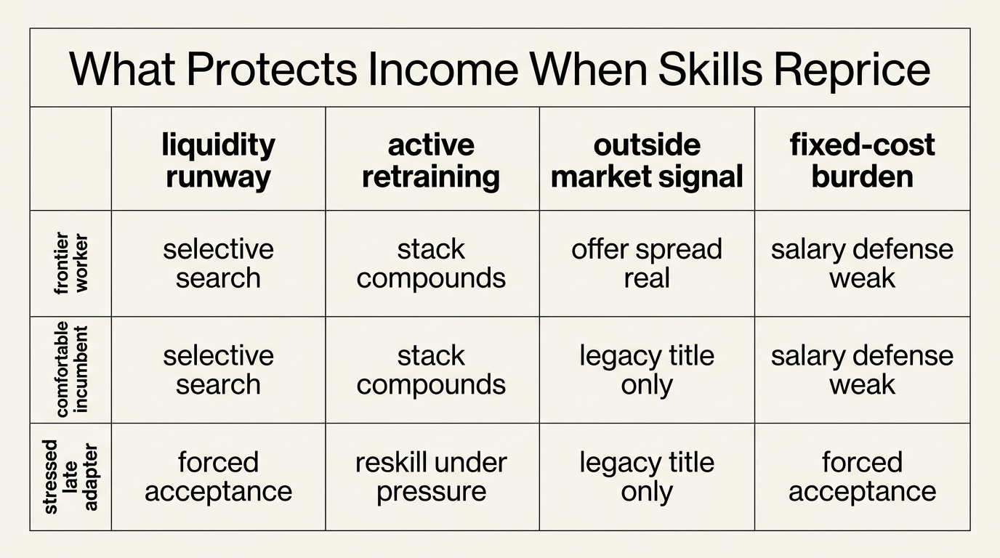

The Skill Obsolescence Curve
Career risk rarely announces itself as sudden unemployment at the start. The more common failure is quieter. A worker's existing skill stack stops repricing upward at the same speed as the market, but the household cost structure continues to assume that yesterday's compensation trajectory will keep holding. By the time the mismatch becomes obvious, the balance sheet often has less liquidity, less bargaining power, and fewer retraining options than the worker imagined.
This is the skill obsolescence curve. It is not one moment when a skill dies. It is the rate at which a worker's market value decays relative to new tools, new workflows, and new employer demand. Some careers stay near the frontier because workers retrain continuously and operate inside growing systems. Others fall behind while titles, compensation, and prestige still look intact. Wealth damage often starts in that hidden interval.
Core thesis: skill obsolescence is a balance-sheet problem before it becomes an employment headline. When the market value of a worker's skill stack decays faster than reskilling, internal mobility, or savings growth can compensate, future income becomes less durable than the household's obligations imply.

Why This Matters More In The AI Period
The World Economic Forum's Future of Jobs Report 2025 does not describe a stable labor market with a few marginal retraining needs. It describes broad job and skill churn through 2030, with a large share of current workforces requiring reskilling and employers naming skill gaps as the main barrier to transformation. The important point is not a single headline figure. It is that the expected pace of change is high enough that workers can no longer assume their current competence stack will remain properly priced.
OECD work points in the same direction but adds a useful nuance. In occupations most exposed to AI, the skills employers demand are shifting, and some previously rewarded combinations of management, business, administrative, and digital tasks may lose scarcity as tools absorb or rearrange parts of the workflow. That does not mean everyone becomes unemployed. It means the composition of valuable work changes, and incumbent workers can lose pricing power even while staying busy.
This is exactly the environment in which households misread income durability. The pay stub still arrives. The role title still sounds senior. The actual market premium embedded in the role may already be thinning.
Obsolescence Is Usually Partial, Not Total
The phrase skill obsolescence can sound too binary. Most careers do not collapse because every prior skill becomes worthless. They weaken because the bundle stops matching what the market now pays for. A product manager whose value depended on coordination scarcity faces different pressure once planning, summarization, and documentation become cheaper. A software engineer whose advantage sat in narrow syntax fluency faces different pressure once code generation compresses parts of routine production. A finance analyst whose workflow depended on spreadsheet assembly faces different pressure once data extraction and narrative drafting accelerate.
The NBER paper by Kogan, Papanikolaou, Schmidt, and Seegmiller is helpful here because it links technology exposure to worker outcomes rather than relying on abstract automation rhetoric. Their findings suggest that technological exposure can displace lower-paid workers while also reducing earnings growth for higher-paid workers whose existing human capital becomes less well matched to the new technology set. That is closer to reality than the cartoon view that only low-skill work is threatened.
For WealthMeter readers, the key takeaway is that obsolescence often shows up first as slower wage growth, weaker outside offers, and declining strategic mobility. Those are wealth variables even before they become unemployment variables.
Why High Earners Often Miss The Curve
High earners are often the last to notice skill decay because current compensation delays the feedback. Benefits remain strong. Reputation still carries. Internal systems still reward firm-specific knowledge. The worker therefore mistakes current cash flow for durable labor-market value. In reality, part of that compensation may be legacy rent tied to tenure, scarce relationships, or an older workflow that is already being redesigned.
This delay is dangerous because high-income households usually build fixed obligations around expected continuity. Mortgage size, school tuition, lifestyle overhead, private-market commitments, and geographic cost structure all assume that compensation can be defended or replaced. Once skill obsolescence compresses external demand, the household discovers that income resilience and income level were never the same thing.
The result is a familiar WealthMeter pattern: strong nominal earnings paired with weak optionality. The worker is not poor. The worker is expensive to retrain from a position of stress.
The Real Curve Combines Three Decays
The first decay is task-value decay. Certain tasks become cheaper because software automates them or makes them widely accessible. The second decay is market-signaling decay. Credentials or prior titles lose some signaling force when employers can test real output faster or when a larger candidate pool gains access to similar tools. The third decay is learning-speed decay. Workers who stop updating their stack regularly often need more time and more discomfort to catch back up later.
Together these create a compound effect. The worker's current role may still function, but promotion pathways narrow, switching costs rise, and the distance to the frontier widens. Skill obsolescence is therefore not only a demand-side problem. It is also a path-dependence problem inside the worker.
That is why the right question is not “Will AI take my job?” The better question is “Which parts of my current compensation depend on skills or workflows that are becoming less scarce, and how quickly am I replacing that scarcity with something harder to commoditize?”

How Skill Obsolescence Turns Into Wealth Damage
Income streams should be valued like assets with durability assumptions. A household that treats salary as a perpetual stable annuity will over-borrow, under-save, and underinvest in skill renewal. Skill obsolescence changes the discount rate on future labor income. It also raises the probability that income replacement, if needed, will arrive at a lower level or after a longer transition.
This is why liquidity matters so much. A worker with twelve to twenty-four months of runway can retrain, search selectively, or accept temporary income compression while rebuilding edge. A worker with three months of runway must usually monetize existing skills immediately, which is exactly when the market is repricing those skills downward. The balance sheet determines whether obsolescence becomes manageable adaptation or forced downgrade.
Households should therefore think of reskilling as capital expenditure, not self-help theater. Training time, certifications, portfolio work, tool fluency, and network rebuilding all consume real resources. The right comparison is not between training and doing nothing. It is between controlled reinvestment now and distressed reinvestment later.
What A Better Response Looks Like
- Map your income stack by scarcity source. Separate what is paid for judgment, relationships, regulation, execution, domain knowledge, and routine throughput.
- Track external market pricing, not only internal compensation. Outside interviews, recruiter conversations, and comparable postings reveal whether the role is still scarce.
- Hold explicit reskilling reserves. Time and cash for retraining should be budgeted like maintenance on any other core asset.
- Reduce fixed-cost dependence on one compensation regime. The more rigid the household cost stack, the less room there is to adapt without forced concessions.
- Prefer skills that compound with tools rather than compete directly with them. Workflow design, judgment, sales, interpretation, and system ownership often defend value better than routine throughput alone.
None of these eliminate labor-market volatility. They change the shape of the curve. The goal is not perfect foresight. It is a balance sheet that can absorb technological repricing without converting every market shift into household fragility.
Known, Inferred, And Unknown
| Category | Assessment |
|---|---|
| Known | Major employers and policy bodies expect substantial skill disruption through 2030, with reskilling needs large enough to affect workforce strategy at scale. |
| Known | Technology exposure can reduce earnings growth or displace workers at both lower and higher parts of the earnings distribution when existing human capital becomes less well matched. |
| Known | Workers in AI-exposed occupations do not only need technical retraining; they also face changes in the relative value of business, management, and routine coordination skills. |
| Inferred | Many high-income households overestimate the durability of salary because current compensation lags the market repricing of their underlying skill stack. |
| Inferred | Liquidity and active retraining are the main factors that determine whether skill obsolescence leads to temporary adaptation or permanent income compression. |
| Unknown | Which occupations will stabilize around AI augmentation versus continue to lose bargaining power as tools and labor supply improve together. |
The Practical Reading For WealthMeter
The skill obsolescence curve belongs in the career-dynamics lane because it connects labor-market change directly to household resilience. Wealth is not only what the balance sheet owns. It is also what the income engine can still command under changing market conditions. A worker who ignores skill decay is effectively running an unmarked asset impairment inside the household portfolio.
That is why the right response is structural, not emotional. Build liquidity, keep market-tested optionality, and reinvest in skills before the old stack stops repricing. The household that does that can absorb technological change as transition. The household that does not often experiences it as sudden status loss, even when the curve was visible for years.
Further Reading Inside The Site
This article connects directly to The Career Optionality Gap, The Golden Handcuffs Equation, and The AI Displacement Timeline. Together they show why earnings alone do not measure labor-market resilience.
Source List
World Economic Forum. The Future of Jobs Report 2025. Published January 7, 2025.
OECD. Changing Skill Needs in the Labour Market.
OECD. How Is AI Changing the Way Workers Perform Their Jobs and the Skills They Require?. 2024.
Green A. Artificial Intelligence and the Changing Demand for Skills in the Labour Market. OECD Artificial Intelligence Papers. 2024.
Kogan L, Papanikolaou D, Schmidt LDW, Seegmiller B. Technology, Vintage-Specific Human Capital, and Labor Displacement: Evidence From Linking Patents With Occupations. NBER Working Paper 29552. 2021, revised 2022.
Bartel AP, Sicherman N. Technological Change and the Skill Acquisition of Young Workers. NBER Working Paper 5107. 1995.